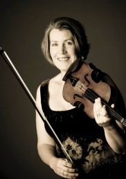

Jane Bultz, Leader

Leader: Jane Bultz
Jane began her musical journey at the Kent Music School, building her skills for four years at the Guildhall School of Music under the tutelage of Suzanne Rozsa and Isabelle Flory.
Following her tenure at the Guildhall, Jane became Professor of Violin at the Junior Guildhall School of Music. Simultaneously, she carved out a thriving career as a freelance musician and educator in the South of England.
Jane has led several orchestral ensembles, and she oversees a vibrant professional string quartet. This ensemble delivers captivating recitals with invited guest players, also engaging in meaningful work with profoundly disabled children.
Beyond her musical endeavours, Jane indulges in a diverse range of hobbies including skiing, sea swimming, and gardening. These pursuits complement her deep-rooted passion for music.